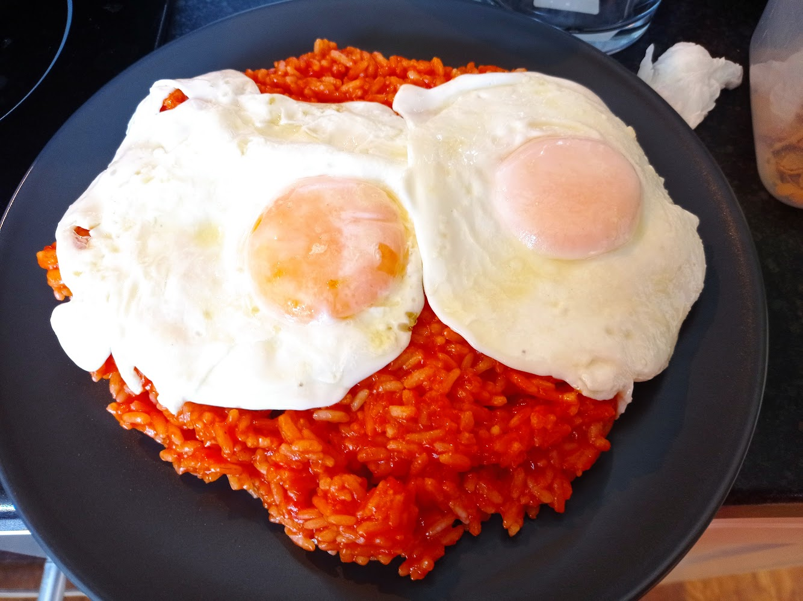

Cuban Rice

An easy to make Cuban classic
If you're looking for comfort food that can be whipped up quickly with just a few ingredients, there's not much better than Cuban rice, or arroz a la cubano in Spanish.
All you need to pull it together is some rice, fried tomato sauce and a couple of fried eggs to top it with.
Ingredients
- White rice (long-grain rice is best)
- Good-quality fried tomato sauce/salsa de tomate frito (Orlando is a good Spanish brand)
- Two whole eggs, for frying
Steps
- Cook your rice according to the instructions on the package
- Add packet of fried tomato to pan and mix well to coat all the grains of rice
- Heat through for 2 minutes and taste for seasoning
- Add salt and/or pepper if required
- Set tomato rice mixture aside covered in pan until ready to serve
- Fry two good-quality eggs in plenty of olive oil until crispy but the yolk is still liquid
- Add a sprinkle of salt on top of the egg
- Serve the rice in mounds on plates and topped with the fried egg